Example 4¶
felformula – Basic FEL physics calculator app.
Introduction¶
Help users/operators or other non-FEL physics specialists to understand the FEL facility performance under certain machine configurations should be significant, this app is created for such mission that not only providing the staright-forward FEL calculation results, but also showing the clues for the FEL specialists to tunning the machine.
The main features of felformula are:
FEL parameters calulations based on analytical formulae;
Parameters scan studies, valid parameters:
- Beam energy, 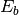, unit: MeV
- Energy spread, 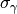
- Transverse emittance, 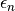, unit: m
- Peak current, 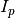, unit: A
- Undulator period, 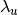, unit: m
- FEL wavelength, 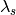, unit: m
- Average beta function,
, unit: m
- Bunch charge,
, unit: C
Interactive scan results figure plot;
Data saving/exporting and loading/importing.
Todo
Comprehensive FEL physics studies could be extended to
felformula, e.g. integrate numerical simulations into Advanced
menu, into which modules could be built to implement various FEL
simulation modes, like SASE, HGHG, EEHG, PEHG, and mixtures of them,
etc., as well as the algorithms like Twiss-matching,
multi-parameters optimization, post-processing for data analyais, etc.
Note that every single module should be built with clean and clear
APIs, so as to communicate with other modules or apps.
Usage Guide¶
FEL Calculation¶
Open felformula as the previous examples demonstrated. Fill the
Beam Parameters panel to setup the main parameters of an FEL
facility, e.g. Dalian Coherent Light Source, the physics meaning of
every input parameter should be explained the name itself.
Push Calculate button in the Operations > Command panel to
calculate/update the output parameters that listed in FEL Calculations
panel, where all the available parameters are grouped into
Undulator and E-beam and FEL radiation categories, note that
these calculated resutls are only for reference.
{kind=link}
All the data could be exported by File > Export (SHIFT+CTRL+E),
additional meta information could be appended into saved file, see the
following image.
{kind=link}
While the exported data file could also be imported by
File > Import (SHIFT+CTRL+I), here is the exported file example,
[00-info]
author = Tong Zhang
created_time = 2016-09-01 07:20:38 CST
note = note = FEL user facility based on HGHG principle, generating FEL radiations from 50-150nm, pulse energy of >100 uJ.
[01-facility]
affiliation = DICP
country = China
name = Dalian Coherent Light Source
[02-electron_beam]
average_beta_function(m) = 10
bunch_charge(C) = 0.5e-9
bunch_length_t(fs) = 664.9
bunch_length_z(um) = 199.5
bunch_shape = gaussian
central_energy(MeV) = 300
energy_spread = 0.0001
normalized_emittance(m) = 2e-6
peak_current(A) = 300
transverse_beam_size(m) = 184.6
[03-undulator]
K = 0.870
au = 0.615
gap(mm) = 11.861
peak_field(T) = 0.373
period_length(m) = 0.025
total_length(m) = 12
type = planar
[04-FEL_radiation]
FEL_parameter_1D = 1.180e-03
FEL_parameter_3D = 1.018e-03
bandwidth(%) = 0.33
gainlength_1D(m) = 0.973
gainlength_3D(m) = 1.128
output_power(W) = 4.485e+03
photon_energy(eV) = 25
photon_per_pulse = 1.88e+09
pulse_energy(uJ) = 0.0075
saturation_length_SASE(m) = 23.57
saturation_power_MXie(W) = 1.265e+08
saturation_power_SASE(W) = 1.278e+08
shotnoise_power_SASE(W) = 0.97
wavelength(m) = 50e-9
Parameters Scan¶
Parameters scan feature is supported by checking the Enable Scan box,
and selecting the parameter to be altered, e.g. average beta function.
{kind=link}
Click Calculate first, then Show Plot to open the figure plot
window, where the data for Y-axis could be seleted from the following table:
| Choice | Symbol | Literal explanations |
|---|---|---|
| 01-au | Normalized undulator parameter | |
| 02-K |  |
Undulator parameter |
| 03-Bu | 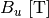 | Undulator magnetic peak field [T] |
| 04-gap | Permanent undulator gap [mm] | |
| 05-rho1D | 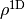 | FEL parameter or Pierce parameter (1D) |
| 06-rho3D | 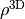 | FEL parameter or Pierce parameter (3D) |
| 07-Lg1D | 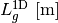 | FEL power gain length (1D) [m] |
| 08-Lg3D | 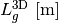 | FEL power gain length (3D) [m] |
| 09-Psat | 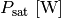 | FEL saturation power (M.Xie formulae) [W] |
| 10-Pshot | 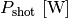 | FEL initial shotnoise power [W] |
| 11-Pss | 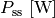 | FEL saturation power (SASE) [W] |
| 12-Lsat | 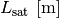 | FEL saturation length (SASE) [m] |
| 13-sigmar | 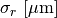 | Transverse e-beam radius size (rms) [micro m] |
| 14-sigmat | 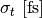 | Temporal bunch length (rms) [fs] |
| 15-bandWidth | 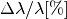 | FEL bandwidth [%] |
| 16-PhotonEnergy | 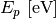 | FEL photon energy [eV] |
| 17-PulseEnergy | 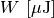 | FEL pulse energy [micro J] |
| 18-PhotonPerPulse | FEL photon number per pulse |
{kind=link}
The figure will be automatically updated when selected valid parameters.
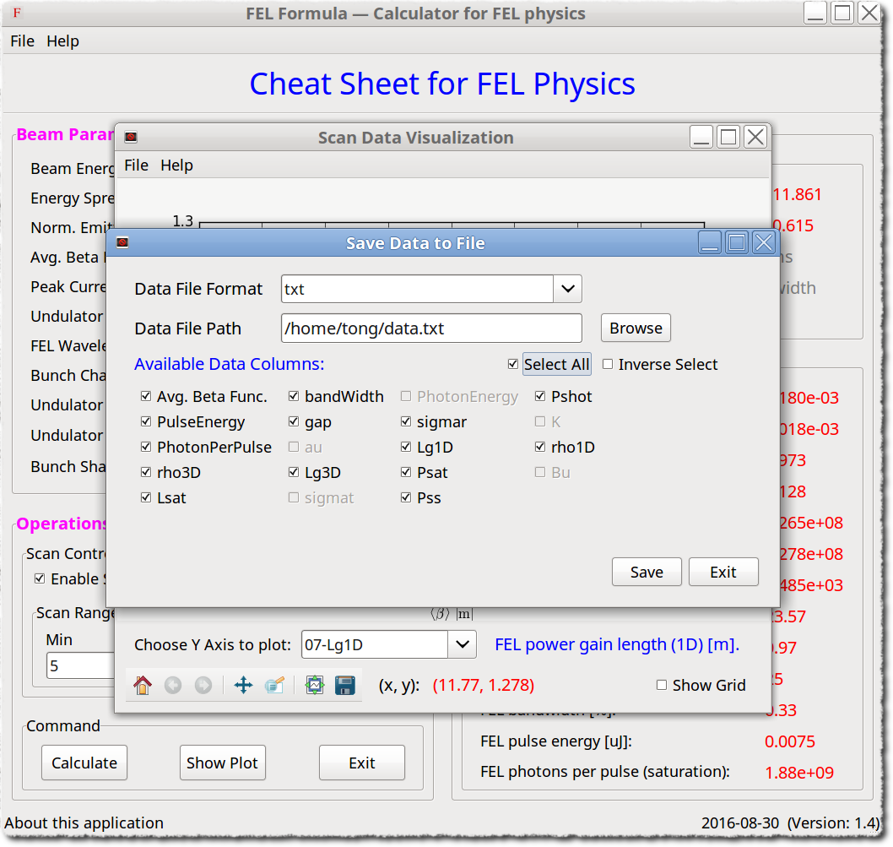{kind=link}
The data could also be saved by SHIFT+CTRL+S, or CTRL+S to save the figure. Select the data columns
that to be saved, the grey ones are invalid, example file see here.